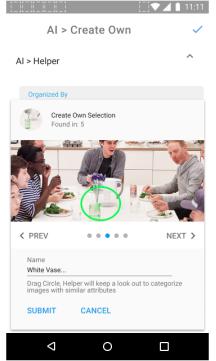
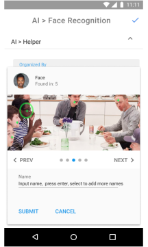
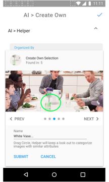
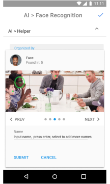

Them Photos
An image gallery app on Android for photography enthusiasts.
Overview
The project was initiated by exploring the possibilities in the cloud storage market. Deciding which industry to explore was difficult, it is vast. I created a framework to narrow it down. I looked into popular cloud service providers with a common service. It turned out to be photos. The Them Photos is a cloud storage geared at photography enthusiasts. This app will be a tool that takes it a step further by allowing users to control their organization of photos by having access to the features with a different approach to the interface.
- Concept & Brand Identity
- Competitive Analysis
- User Survey & Personas
- User Stories & Flows
- Information Architecture
- Wireframes & Mockups
- Usability Testing
- Figma
- Illustrator
- Usability Hub
- Invision
Problem
Users had minimal time invested into photos being stored. There was no sense of value for the product that catered to a general audience. As robust as the apps were, they lacked access to tools for organzing photos.
The Solution
Creating an interface that is transparent to access features to complete tasks in an app will add value to a target market therefore retaining them onto one platform.


 


